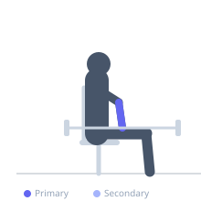
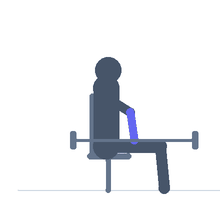

Exercise guide / Seated Barbell Wrist Curl (Underhand / Flexion)
Seated Barbell Wrist Curl (Underhand / Flexion)
The seated barbell wrist curl performed underhand (supinated grip) isolates the wrist flexor muscles on the inner forearm. The forearms rest on the thighs for support, and the wrists flex upward against the barbell's resistance. It is a foundational forearm isolation exercise for building wrist flexor strength and forearm girth, commonly programmed at the end of arm training days.
Primary muscles
flexor carpi radialis
flexor carpi ulnaris
Secondary muscles
Equipment
Standard Barbell
Flat Bench


Starting position
- Sit on a bench. Rest forearms on the thighs, hands just past the knees, supinated grip on the barbell. Allow wrists to extend slightly at the bottom.
Setup
- Use a light barbell or EZ-bar. Forearms fully supported on the thighs.
Steps
- Step 1: Begin with wrists extended (bar hanging down in the supinated grip).
- Step 2: Flex the wrists upward, curling the bar up with the wrist flexors.
- Step 3: Hold briefly at full wrist flexion.
- Step 4: Lower the bar back to the starting position.
Coaching cues
- Forearms planted on the thighs
- Only the wrists flex and extend
- Feel the forearm pump
Breathing
- Exhale on the curl, inhale on the return.
Range of motion
- Full wrist extension to full wrist flexion.
Tempo
- 2-1-2-0
Common mistakes
- Lifting forearms off the thighs — keep them braced
- Using elbow flexion instead of wrist flexion
Safety
- Use light weight — excessive loading can strain the wrist flexor tendons
Training
- hypertrophy: 15–25 reps
- hypertrophy: 3–4 sets
- Rest: {'hypertrophy': 45}